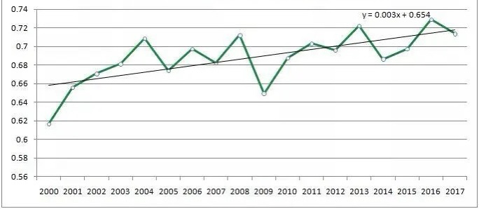
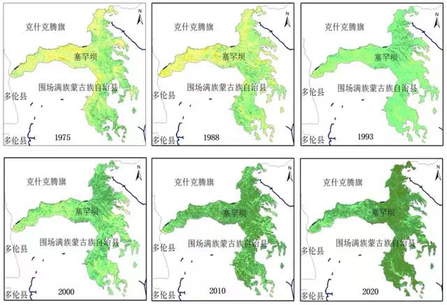
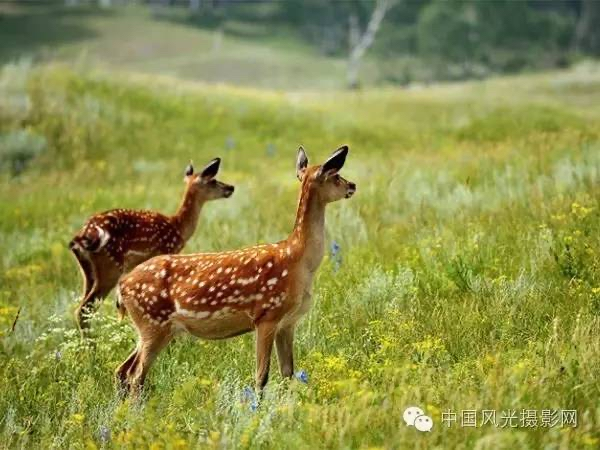
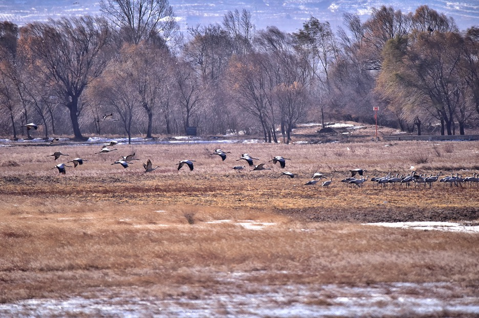
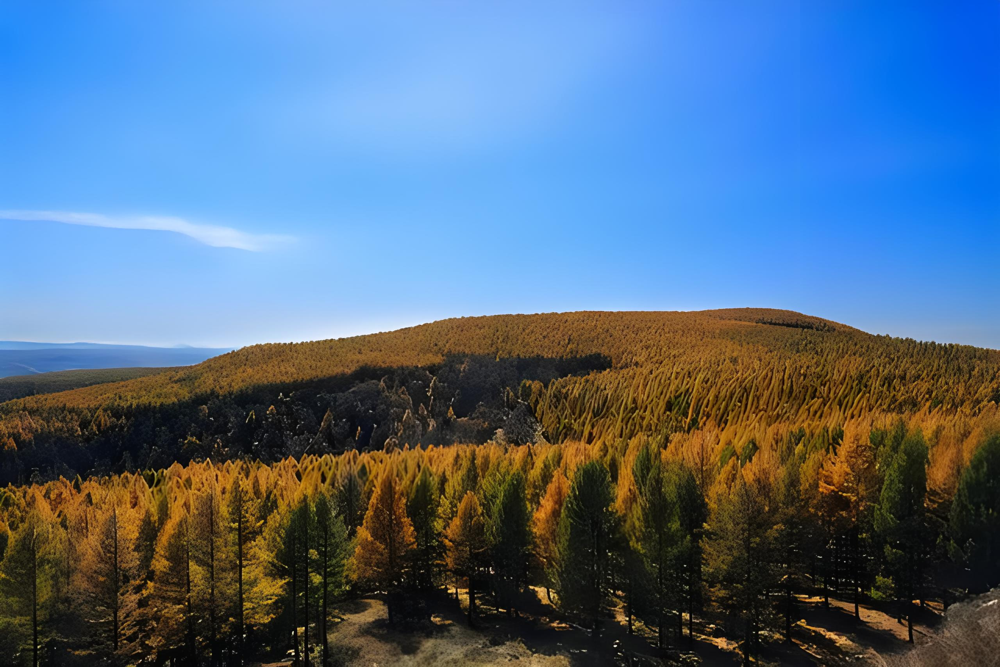
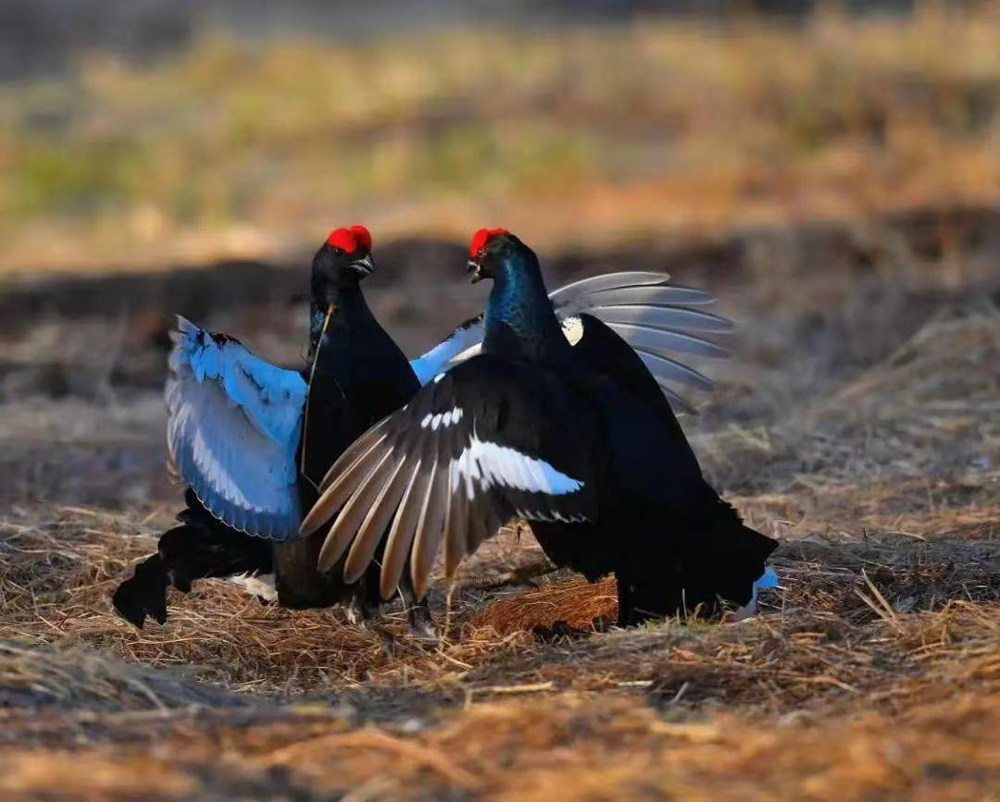
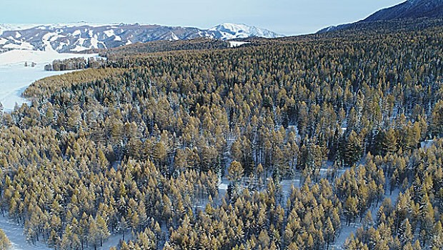

赛罕坝夏季植被指数均值变化 1975-2020年赛罕坝植被覆盖率变化
由于塞罕坝地区属寒温带大陆季风性气候，常年气温偏低。其中塞罕坝机械林场年均气温零下1.3℃，年均积雪7个月，年均无霜期64天，年均降水量479毫米。御道口牧场年均气温为5°C，无霜期短，降水量小【15】。所以独特的地理环境造就了千奇百怪的珍稀物种。因为塞罕坝丰富的物种资源，它现在是研究北方林区、尤其是人工林区生态系统的重要基地，其中许多珍稀濒危物种具有重要的基因价值和研究价值。塞罕坝地区野生动物中，有国家重点保护动物47种，其中一级5种，二级42种。在野生植物中，国家重点保护植物5种分别是樟子松、野大豆、蒙古黄芪、刺五加和沙芦草。如今的塞罕坝，被誉为“林的海洋、河的源头，花的世界、鸟的天堂”，这人间仙境的背后，凝聚着塞罕坝拓荒造林几代人的艰辛和汗水。塞罕坝半个多世纪的生态变迁，生动诠释了“绿水青山就是金山银山”的理念。
由于塞罕坝地区属寒温带大陆季风性气候，常年气温偏低。其中塞罕坝机械林场年均气温零下1.3℃，年均积雪7个月，年均无霜期64天，年均降水量479毫米。御道口牧场年均气温为5°C，无霜期短，降水量小【15】。所以独特的地理环境造就了千奇百怪的珍稀物种。因为塞罕坝丰富的物种资源，它现在是研究北方林区、尤其是人工林区生态系统的重要基地，其中许多珍稀濒危物种具有重要的基因价值和研究价值。塞罕坝地区野生动物中，有国家重点保护动物47种，其中一级5种，二级42种。在野生植物中，国家重点保护植物5种分别是樟子松、野大豆、蒙古黄芪、刺五加和沙芦草。如今的塞罕坝，被誉为“林的海洋、河的源头，花的世界、鸟的天堂”，这人间仙境的背后，凝聚着塞罕坝拓荒造林几代人的艰辛和汗水。塞罕坝半个多世纪的生态变迁，生动诠释了“绿水青山就是金山银山”的理念。
-

塞罕坝国家级自然保护区共记载野生维管束植物67科244属464种。
-

塞罕坝机械林场共有陆生野生脊椎动物256种、鱼类13种、昆虫548种
-

红松洼国家级自然保护区内有动物种70多种其中国家一级重点保护鸟类4种，二级保护重点鸟类16种，国家重点保护哺乳动物3种
-

红松洼国家级自然保护区内就有野生维管束植物595种，国家重点保护药用植物8种，优良牧草89种
-

塞罕坝地区野生动物中，有国家重点保护动物47种，其中一级5种，二级42种
-

塞罕坝的树种丰富，主要树种有落叶松、樟子松、云杉、白桦等乌兰布统自然保护区植被是以禾本科为主的草本植物，种类繁多，人们称之为“五花草塘”50多科400多种